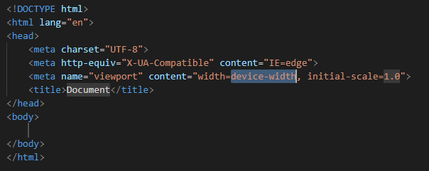

HTML, CSS e JavaScript
Baixe o Visual Studio Code.
Salve os arquivos .html na mesma pasta e abra-a com o VSCode.
Acesse Ctrl+Shift+X para abrir as extensões. Instale o Live Server para visualizar as alterações em tempo real.
Crie um novo arquivo e salve-o com a extensão .html. Digite "!" e clique em TAB para o VSCode criar a estrutura do html, automaticamente.
Os primeiros arquivos (como este que você lê) aparecerão sem nenhuma formatação, pois isso cabe ao CSS. O objetivo é ir passo a passo, para não confundir.
Então, não estou utilizando nenhum recurso que não tenha sido explicado, ou que não seja simples demais que eu possa explicar logo na frente.
Para o conceito inicial de "tag", clique em Próximo.